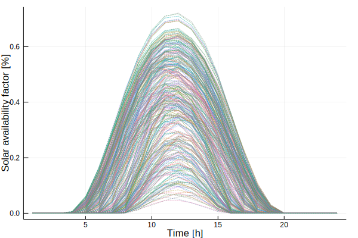

ClustData - Time Series Data
Provided Data
load_timeseries_data_provided() loads the data for a given region for which data is provided in this package. The optional input parameters to load_timeseries_data_provided() are the number of time steps per period T and the years to be imported.
load_timeseries_data_cepYour Own Data
For details refer to ClustForOpt
Note
The keys of {your-time-series}.data have to match "{time_series (as declared in techs.csv)}-{node}"
ClustForOpt.load_timeseries_data — Function.load_timeseriesdata(data_path::String; T-#Segments,years::Array{Int64,1}=# years to be selected for the time series, att::Array{String,1}=# attributes to be loaded)- Loading all
*.csvfiles in the folder or the filedata_path - The
*.csvfiles shall have the following structure and must have the same length:
| Timestamp | [column names...] |
|---|---|
| [iterator] | [values] |
- The first column should be called
Timestampif it contains a time iterator - The other columns can specify the single timeseries like specific geolocation.
- Each column in
[file name].csvfile will be added to the ClustData.data called"[file name]-[column name]" - Loads all attributes if the
att-Array is empty or only the ones specified in it
Aggregation
Time series aggregation can be applied to reduce the temporal dimension while (if done problem specific correctly) keeping output precise. Aggregation methods are explained in ClustForOpt High encouragement to run a second stage validation step if you use aggregation on your model. Second stage operational validation step
Examples
Loading time series data
using CEP
state="GER_1"
# load ts-input-data
ts_input_data = load_timeseries_data_provided(state; T=24, years=[2016])
using Plots
plot(ts_input_data.data["solar-germany"], legend=false, linestyle=:dot, xlabel="Time [h]", ylabel="Solar availability factor [%]")/home/travis/.julia/packages/GR/IVBgs/src/../deps/gr/bin/gksqt: error while loading shared libraries: libQt5Widgets.so.5: cannot open shared object file: No such file or directory
connect: Connection refused
GKS: can't connect to GKS socket application
Did you start 'gksqt'?
GKS: Open failed in routine OPEN_WS
GKS: GKS not in proper state. GKS must be either in the state WSOP or WSAC in routine ACTIVATE_WS
Aggregating time series data
plot(ts_clust_data.data["solar-germany"], legend=false, linestyle=:solid, width=3, xlabel="Time [h]", ylabel="Solar availability factor [%]")
savefig("clust.svg"); nothing # hide